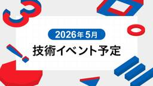

Sansan Tech Blog
https://buildersbox.corp-sansan.com/
Sansanのものづくりを支えるメンバーの技術やデザイン、プロダクトマネジメントの情報を発信
フィード
AI時代のビジネスインフラをつくる。 メガベンチャーを経てSansanの新規プロダクトに挑む理由
Sansan Tech Blog
キャリアは、選択の積み重ねでできています。 どんな経験を経て、なぜSansanを選び、いまどんな挑戦に向き合っているのか。 「Sansan 3 Stories」では、これまでの歩みと、実際にSansanで働いて感じたこと、そしてこれからの挑戦を「過去・現在・未来」の3つのストーリーでお届けします。今回のインタビューでは、メルカリ、スマートニュースというメガベンチャーで開発組織のマネジメントや全社プロジェクトをけん引し、現在はSansanの新規プロダクトであるデータクオリティマネジメント「Sansan Data Intelligence」の開発に挑む多賀谷に話を聞きました。 多賀谷 洋一 / Y…
5日前

2026年5月技術イベント予定
Sansan Tech Blog
Sansan株式会社では、技術イベントや勉強会の主催・登壇・協賛を行っています。 各イベントの詳細については、以下のリンクからご確認ください。 ※開催状況により、すでに受付を終了している場合がございます。 ※掲載している内容は公開当時の情報です。最新情報は各イベントページをご確認ください。
7日前

第40回人工知能学会全国大会（JSAI2026）にプラチナスポンサーとして協賛します
Sansan Tech Blog
こんにちは、研究開発部のライです。 2026年6月8日(月)から6月12日(金)にGメッセ群馬で開催される人工知能学会全国大会（JSAI2026）に、Sansan株式会社はプラチナスポンサーとして協賛し、ブース出展および発表を行います。Sansanからは、ポスター発表2件と口頭発表1件を行います。 本記事では各発表の概要と、ブースについて紹介します。
9日前
AIと共に技術負債と向き合う。OpenAPI GeneratorへのOSSコントリビュートを果たした記録
Sansan Tech Blog
技術本部 Eight Engineering Unit Mobile Applicationグループに所属しているAndroidエンジニアの若田（@wakanao_banana）です。毎朝バナナとヨーグルトを食べています。 TL;DR Eightの歴史的な型の負債をOpenAPIのoneOfで吸収していた kotlinx_serializationでは 特定のケースでOpenAPI Generatorのコード自動生成が壊れていた AIと協業してOSS本体を修正し、sealed interfaceによる型安全なoneOfクラス生成を実現した github.com
12日前
自働化、カイゼン、標準化ーー組織のAI活用を3倍にする製造業の知恵
Sansan Tech Blog
はじめまして。Contract One Engineering Unitで部長をしている大島です。2025年6月にチームにジョインしたので、もうじき1年になります。この1年でContract OneもContract One Engineering Unitも大きく成長しました。 今回はARR（Annual Recurring Revenue／年間経常収益）10億円達成し、さらに勢いを増すContract Oneを支えるべく、開発組織として日々向き合っている、生産性向上について書きたいと思います。 個人技の限界——「速い人」がいるだけでは組織は変わらない TPS——製造業が教えてくれた「仕組み…
15日前
App Platform Group 合宿 in 熱海
Sansan Tech Blog
こんにちは、Platform Engineering Unit Application Platformグループの辻田です。 App Platformグループで3日間の開発合宿を実施しました。 アプリケーション基盤 Orbit*1 の運用改善や開発者体験の底上げにまとまった時間を投下し、チームとしての目線合わせと、具体的な改善を一気に進めることが目的です。 この記事では、合宿で何をやったか／何が前に進んだかを、できるだけ実務目線でまとめます。 *1:Orbitとは？
19日前
中部支店エンジニアの働く環境をご紹介
Sansan Tech Blog
はじめに こんにちは。技術本部CTO室の中村です。本記事は、名古屋の栄にある中部支店の環境や空気感についてのレポートです。 執筆にあたってのモチベーション 私は、2025年11月に中部支店へ異動し、その勢いのまま中部のエンジニア組織拡大に向き合っています。 buildersbox.corp-sansan.com 前回の記事ではそのモチベーションや取り組みについて書きましたが、今回は中部支店エンジニア目線での実際の環境や空気感に焦点を当てて書いてみようと思います。
20日前
オフィスネットワークへの向き合い方：SansanのNW診断・改善アプローチ
Sansan Tech Blog
はじめに こんにちは、コーポレートシステム部の正木です。コーポレートエンジニアとして社内システムやインフラに関連する設計・開発・運用を担当しています。 まずは部門について簡単に紹介します。私が所属するのはコーポレートシステム部という部門で、いわゆる情報システム部門（情シス）です。部のミッションとして掲げているのが「EXをシンプルにする」というものです。EXとはEmployee Experience（従業員体験）を指し、従業員が働く上での体験価値を高めることを目指しています。 前回の記事では「ネットワーク運用、まだ手動ですか？SansanがMeraki API × AIで定義する次世代の運用スタ…
22日前
AIの出力を「信頼」に変えるまでに、考えたこと ─ JaSST Tokyo 2026 登壇レポート
Sansan Tech Blog
はじめに こんにちは。Bill OneでQAエンジニアをしている林樹坤です。 2026年3月20日、JaSST Tokyo 2026に登壇しました。部長の佐藤と共同登壇で、Sansan QA組織のAI戦略と、私が設計したAIテスト支援システム「AITAS」の実践事例を話しました。 この記事は、AITASについて書いてきたシリーズの第3弾です。
1ヶ月前
Bill Oneのデータ分析エージェントをインターンで開発した話
Sansan Tech Blog
はじめに こんにちは、はじめまして！ Sansanの技術本部 CTO室 AI Solution Developmentでインターンをしていた広瀬エイトル（@Heitor_Hirose）です。*1 約1カ月半のインターンシップで、Bill One向けのデータ分析エージェントの開発に取り組みました。自然言語で質問するだけで、Bill Oneのデータを検索・集計・可視化できるツールです。 この記事では、技術スタックの選定理由、詰まったポイントを中心にまとめます。 *1:記事は、執筆者本人の了承を得て、代理で投稿しています。
1ヶ月前
【MatsuribaMAX 2026参加レポート】東海一熱い学生エンジニアコミュニティ
Sansan Tech Blog
MatsuribaMAXに参加したSansanメンバーこんにちは。Sansanのプロダクトで利用している企業データなどのマスターデータ構築・品質管理をしているData Intelligence Engineering Unit Master Dataグループの内生蔵（うちうぞう）です。中部支店に戻ってきて、1年が経ちました。 東海地方最大級の学生エンジニアイベント **MatsuribaMAX 2026** に、Sansanはゴールドスポンサーとして協賛し、当日は企業ブースとして参加しました。matsuriba.nxtend.or.jpこの記事では、当日の雰囲気やブースで実際に学生のみなさんと…
1ヶ月前
2026年4月技術イベント予定
Sansan Tech Blog
Sansan株式会社では、技術イベントや勉強会の主催・登壇・協賛を行っています。 各イベントの詳細については、以下のリンクからご確認ください。 ※開催状況により、すでに受付を終了している場合がございます。 ※掲載している内容は公開当時の情報です。最新情報は各イベントページをご確認ください。
1ヶ月前
toBアプリでLiquid Glassに挑んだ話 ── UITabBarのクラッシュからAppleミートアップでの学びまで
Sansan Tech Blog
導入 こんにちは。技術本部 Sansan Engineering Unit Mobile Applicationグループの盛重です。2025年4月に新卒で入社し、SansanのiOSアプリ開発に携わっています。 WWDC25でAppleが発表した新しいデザイン言語「Liquid Glass」は、iOS 7のフラットなデザイン以来となる大規模なUI刷新です。 Liquid Glass適用後の撮影画面 ※画像内の名刺はダミーです。 Sansanアプリでは、エンジニア主導で、QA・デザイナー・PdMと連携しながらこの対応に取り組みました。対応の過程ではAppleの「Let's talk Liquid…
1ヶ月前
Vol. 16 インターン生が新規チームに入ってSpannerのクエリパフォーマンスチューニングに取り組んだ話
Sansan Tech Blog
この記事は、Sansan Data Intelligence 開発Unit ブログリレーの第16弾です！！ こんにちは。2026年新卒内定者として、技術本部Data Intelligence Engineering Unit Data Intelligence Groupでインターンをしている山口です。 この記事では、インターン期間中にCloud Spannerのクエリパフォーマンスチューニングに取り組んだ経験をまとめます。 Cloud Spannerを使って気づいたこと Sansan Data Intelligence (SDI)はデータベースとしてGoogle Cloudの分散データベース…
1ヶ月前
インターン生が1ヶ月で名刺連携の非同期基盤を救った話
Sansan Tech Blog
はじめに 技術本部 Sansan Engineering Unit 名刺メーカー Dev グループで 1 ヶ月のインターンをしていた三富佑人です。*1Sansan 名刺メーカーは、企業が社員の名刺を Web 上でデザイン・発注できるサービスです。バックエンドは Node.js（TypeScript）で実装されています。名刺のデザインや支給管理だけでなく、名刺を社員に支給するタイミングで名刺データを Sansan に連携する機能も備えています。インターンでは新機能の開発ではなく、既存の非同期処理基盤の信頼性向上に取り組みました。4 月は多くの企業で新入社員の入社や人事異動が集中する時期です。入社…
1ヶ月前
データマネジメント戦略Night イベントレポート
Sansan Tech Blog
はじめに こんにちは。技術本部 CTO室の中村です。 先日、3/19にオフラインイベント「データマネジメント戦略Night - 4社のリアルを語る会」をSansan本社にて開催しました。 本記事では、イベントの様子を簡単に振り返ります。 イベントレポート 本イベントでは、Sansan、GA technologies、kubell、レバレジーズの4社の方によるLTとクロストークセッション、そして懇親会を行いました。 開催告知から想定を超える多数の参加登録を頂き、当日は50名を超える方にご参加いただき、大変盛況なイベントとなりました。 LT1. 不動産テックのデータマネジメント戦略 株式会社 GA…
1ヶ月前
GENIAC における ParallelCluster GPU クラスタの構築記録
Sansan Tech Blog
Sansan株式会社 研究開発部Architect GroupでMLOps/Platformエンジニアをしている伊藤です。 今回は、GENIACに採択され、AWS上にSlurmによるGPUクラスタを構築した経験から、事前に知っておきたかったポイントをまとめます。構築中に遭遇した課題と、そのときの判断を具体的に書いているので、これからGENIACへの応募を検討している事業者やGENIACに採択された事業者の方が「ここは先に設計しておこう」と見積もれる材料になれば幸いです。 目次 GENIAC とは 技術選定: なぜスケジューラを使い、なぜ Slurm を選んだか 構築タイムライン 全体アーキテク…
1ヶ月前
Vol. 15 新規プロダクトを最速でリリースするために、デザイナーが意識したこと
Sansan Tech Blog
この記事は、Sansan Data Intelligence 開発Unit ブログリレーの第15弾です！！ こんにちは！ Sansan Data Intelligence（SDI）プロダクトデザイナーの来住（Kishi）です。2024年に新卒で入社し2年目が始まった時期から、SDIの開発に立ち上げメンバーとして参画しています。 この記事では、新規プロダクトを半年で体験設計、実装、リリースするためにデザイナーチームとして意識した3つのことを紹介します。 1. 立ち上げフェーズからデザインシステムを意識的に使う 1つ目は、画面設計時からデザインシステムを一貫して使い、実装でも活用してもらうことです…
1ヶ月前
EMConf JP 2026 参加 &「ストレッチゾーンに挑戦し続けることの難しさ」をテーマに登壇してきました！
Sansan Tech Blog
はじめに 技術本部 Sansan Engineering Unit Mobile Application GroupにてEM（エンジニアリングマネジャー）として活動している赤城です。 2026年3月4日、Engineering Manager（EM）に特化したカンファレンスである、EMConf JP 2026に登壇者として参加してきました。 初めてのカンファレンス登壇ということもあり、準備から当日まで大変なことも多かったのですが、終わってみれば「今まで参加したカンファレンスの中で一番充実していた」と感じるほど、濃い一日になりました。 この記事では、登壇準備の裏側から当日の緊張と手応え、印象に残…
1ヶ月前
Vol.14 Base UI × CSS Modules で始めるヘッドレスコンポーネント開発
Sansan Tech Blog
この記事は、Sansan Data Intelligence開発Unit ブログリレーのVol.14です。 こんにちは、技術本部Data Intelligence Engineering Unitの茂木です。 私たちのチームでは、取引先データの品質を高めて企業のDXを後押しするデータクオリティマネジメント「Sansan Data Intelligence」（以下SDI）のフロントエンドをNext.js (App Router) + TypeScriptで開発しています。SDIはデータの連係設定や取り込み指示といった管理機能が中心のプロダクトで、Select・フォーム・ダイアログなど、操作系のU…
1ヶ月前
Vol.13 複雑さに立ち向かう軽量Spec駆動開発
Sansan Tech Blog
この記事は、Sansan Data Intelligence 開発Unit ブログリレー の第13弾です。こんにちは、技術本部 Data Intelligence Engineering Unitのしゅん（@MxShun）です。弊社では「SOCv2」と呼ばれるMaster Data as a Service (MDaaS)の構築を進めています。SOCv2が生まれる背景になった課題やアーキテクチャ全体像は、先日の永井の記事 Vol.03 SOCv2: MasterData as a Service (MDaaS) 10年もののSystemを作り替える をご参照ください。 今回は、複雑なSOCv2…
1ヶ月前
言語処理学会第32回年次大会(NLP2026)に参加しました
Sansan Tech Blog
こんにちは。研究開発部の佐藤です。2026年3月9日(月)から3月13日(金)にかけて、栃木県のライトキューブ宇都宮にて言語処理学会第32回年次大会(NLP2026)が開催されました。弊社からは、プラチナスポンサーとして佐藤・齋藤・橋本・大田尾・Loem・根本の6名のメンバーが現地で参加し、スポンサーブースの出展と5名によるポスター発表をしました。本ブログではその様子をお伝えします。
1ヶ月前
AIを活用した大規模iOSアプリのSwift Concurrency移行戦略
Sansan Tech Blog
はじめに こんにちは！技術本部 Sansan Engineering Unit Mobile Application Groupに所属するiOSエンジニアの劉 志輝です。 今回は、ビジネスデータベース「Sansan」のiOSアプリで進めている、Swift6時代に向けたSwift Concurrencyへの移行戦略についてお話しします。 このアプリは10年以上にわたって継続開発されており、UIKit + VIPERアーキテクチャで構成されています。 非同期処理にはRxSwift（Single、Observable、BehaviorRelay）とGCD（DispatchSemaphore、Disp…
2ヶ月前
Sansanのデータ化オペレーションを支えるデータ基盤hydra
Sansan Tech Blog
技術本部Digitization部Platform Engineeringグループの湯村です。Sansanでは、名刺や請求書などの情報を正確なデータへ変換するために、AIによる自動処理と人による補正を組み合わせた大規模な運用体制を構築しています。この記事では、こうしたデータ化の運用を拡大する中で直面した課題と、それを解決するために構築したデータ基盤hydraの設計について紹介します。
2ヶ月前
Vol.12 GKEにIAPを適用してコア機能に集中しよう
Sansan Tech Blog
技術本部Data Intelligence Engineering Unitのスタッフソフトウェアエンジニア藤原です。 Sansan Data Intelligence開発Unitブログリレーのvol.12として、少し趣向を変えて、今日はGoogle Cloudのちょっとだけマニアックだけど便利な機能、IAP（Identity-Aware Proxy）の活用について紹介します。
2ヶ月前
Vol. 24 Bill One開発Unit ブログリレー2025終幕
Sansan Tech Blog
はじめに こんにちは！技術本部 Bill One Engineering Unitの今村です。2025年4月に新卒でSansanに入社しました。あと少しで入社して1年が経つところです。 2025年11月12日に投稿した「Vol. 00 Bill One開発Unit ブログリレー2025を開催！& アーキテクチャConference 2025に協賛します！」で言及した通り、Bill One開発Unit ブログリレー2025を実施しました。エンジニアに加えて、デザイナーやQA、Bill Oneのプロダクト開発責任者など、多くのメンバーが参加し計24本のブログを執筆しました。 本記事では、ブログリレ…
2ヶ月前
RxJava → Coroutinesの置き換えをAIで6倍速にした話
Sansan Tech Blog
はじめに こんにちは。技術本部 Sansan Engineering Unit Mobile Applicationグループの鎌田です。2022年8月にSansanに中途入社し、SansanのAndroidアプリ開発およびiOSアプリ開発に携わっています。 この記事は同じくMobile Applicationグループの朴との共著でお届けします。 Mobileチームでは「技術負債返済」をテーマとしたTech Blogリレー企画を行っています。本記事はその第７弾です。 技術負債解消に向けた継続的運用の試み(2025-09-01) 10年もののSansan Mobileで負債・リスクに向き合う(20…
2ヶ月前
Vol.11 Sansan Data Intelligenceの爆速リリースを支える開発フロー
Sansan Tech Blog
この記事は、Sansan Data Intelligence開発Unitブログリレーの Vol.11 です。 こんにちは、技術本部Data Intelligence Engineering Unit Data Intelligence Groupでインターンをしている仲野です。 今回のブログでは、インターンとしてアサインされた私がキャッチアップを行い、すぐに軌道に乗ることができた、Sansan Data Intelligence（SDI）のアプリケーションサイドの開発フローを紹介します。 Sansan Data IntelligenceのArchitecture SDIの開発において、Arch…
2ヶ月前
AI活用によりノンエンジニアが実装に参画し、双方向に役割を越境するチームへと発展した話
Sansan Tech Blog
こんにちは！Digitization部の宮野隼吏です。Digitization部所属ですが、エンジニアではありません。コードは1行も書けません。そんな私がAIを活用してライトなUI/UX改善や機能実装をし始めた結果、チームでどんな変化が起きたかをお話しします。 3行サマリ チームの現在地 フェーズ1：Devin AIによる自律的実装を試みた時期 フェーズ2：Cursorによる「手触り感」を持った開発へ エンジニアの価値を最大化し、双方向に越境する 最後に 一緒に挑戦してくれる仲間を募集中です 3行サマリ ノンエンジニアがCursorやDevin AIを活用して一部実装、ステージング検証まででき…
2ヶ月前
「渋⾕ Biz × AI: ビジネスにおける AI 利活⽤ 事例勉強会 第4回」レポート
Sansan Tech Blog
今回で4回目となった渋谷 Biz × AI 勉強会最近は家の近くにおいしいスパイスカレーのお店を見つけて良い気分です。研究開発部の吉村です。今回は、2026年2月16日にSansan株式会社で開催された、株式会社サイバーエージェント、株式会社ビズリーチ、Sansan株式会社の三社合同共催による「渋谷 Biz × AI: ビジネスにおける AI 利活用 事例勉強会 第4回」のレポートをお届けします。
2ヶ月前